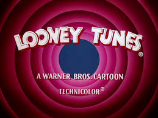

Home Page
Looney Tunes has become one of the highest-grossing media franchises of all time, spawning several television series, feature films, comic books, music albums, video games, and amusement park rides. Many of the characters have made and continue to make cameo appearances in television shows, films, and other media. Bugs Bunny, in particular, is regarded as a cultural icon and has a star on the Hollywood Walk of Fame.[5] Many Looney Tunes and Merrie Melodies films are ranked among the greatest animated cartoons of all time, and five of them have won Academy Awards.